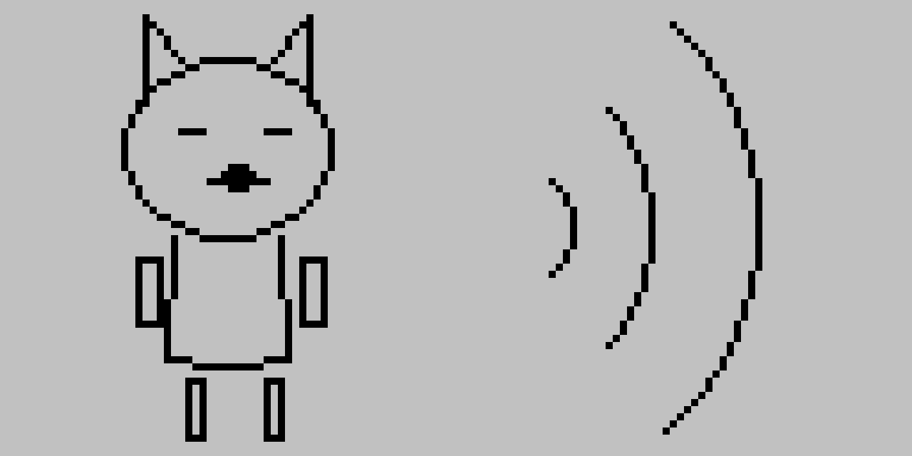
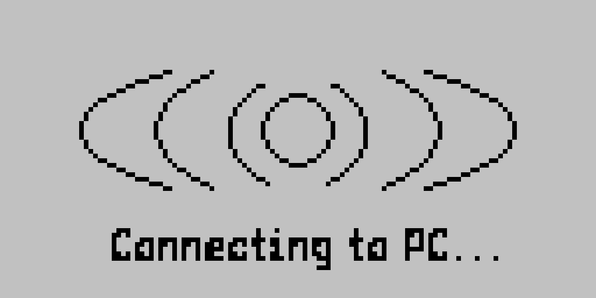
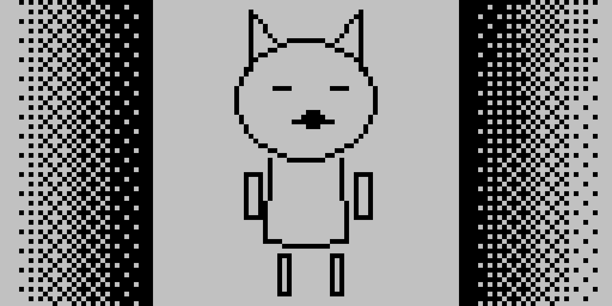
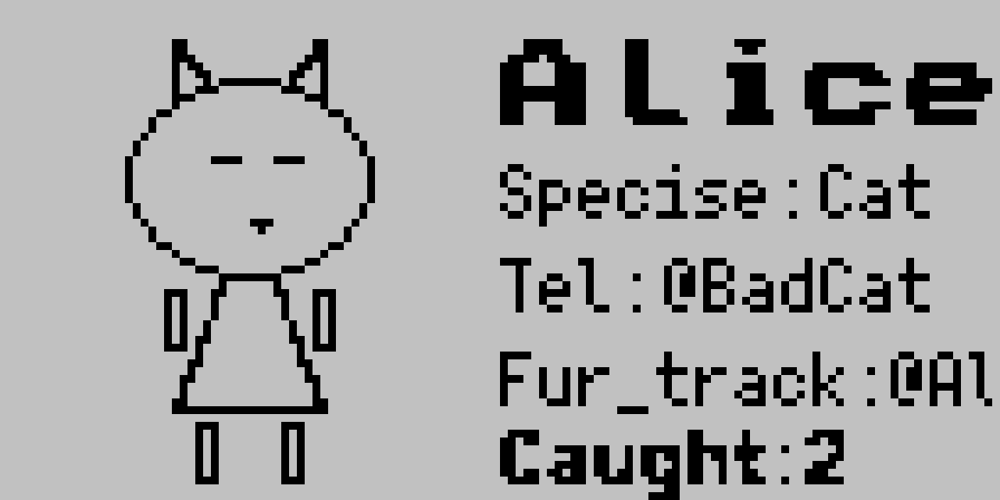
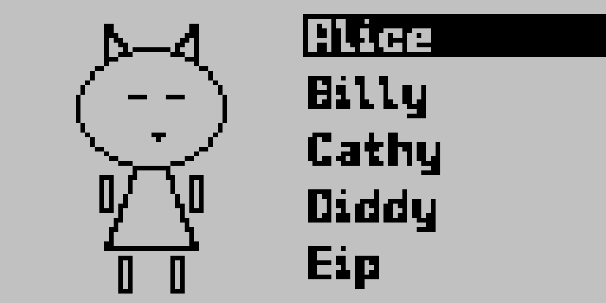

con-venience
A wrist-worn device for fursuiters who have run out of fingers.
Ubi amici, ibi opes. — Plautus · where there are friends, there is wealth
The problem we keep running into
Two fursuiters hit it off. They reach for their phones — and stop.
Paws can't type. Mesh eyes can't see Face ID. De-suiting just to swap a Telegram handle breaks the magic of the encounter every single time.
There are workarounds. Printed business cards in a hip pouch. Photographing a phone screen through fabric. Asking a friend to type for you. None of them are good. All of them require interrupting the bit, the costume, the moment.
con-venience is the shortest path between two people who would otherwise stay strangers. Touch wrists. Done. The rest of the convention is yours.
The touch
Two contact pads. One half-duplex wire. About 400 ms of UART.


No menus, no Bluetooth pairing dance. Pads in the chassis press together when wrists meet; the firmware notices the line go low, sends a one-byte hello, waits for the matching byte back, then streams the profile blob across a single shared wire. The whole exchange completes inside half a second — about as long as a polite "nice to meet you."
What's in the chassis
A coin cell, a small ESP32, an e-ink panel that draws no current when nothing is happening — and almost nothing else.
- MCU
- ESP32
S3-Zero · BLE + USB-C - Display
- 296×128
2.9" Waveshare e-ink · 1-bit - Input
- 1 btn
short / long press - Audio
- 1 buzz
passive piezo · Game Boy melodies - Power
- CR2450
~18h convention day - Contact
- ACOM
two pads · two magnets · one wire
The ACOM protocol, in full
It is shorter than most error messages.
Why so little
The payload is a profile blob: 64-byte avatar, fursona name, species, pronouns, two optional handles. Capped at 512 bytes, so even a worst-case packet flies across in under 600 ms.
Why so dumb
- No pairing keys. There's no security model — by design. If you didn't want to swap, you wouldn't touch wrists.
- No retries beyond CRC fail. A botched handshake just shows the failure animation and asks for another touch.
- No clock sync. UART is self-clocking. The peer can be deep-sleep cold and still respond.
A day at the con, as the device sees it
Saturday. NordicFuzzCon. Bob, who is a cat.

Homepage
The device wakes with Bob's avatar centered, dithered halftone bands at the edges acting as a curtain frame. Static. Drawing zero milliamps. Ready.
Pairing
Bob's paws meet Alice's in the dealer room. The contact pads click closed. Sonar arcs pulse outward; the buzzer plays a three-note rising melody. 340 ms later it's a friendship.

Sortment
Over lunch Bob long-presses to open the friends list and sorts. Group by con — everyone he's met today. By species — three foxes, two cats, one extremely tall snow leopard.

Profile
The friend he met at 11:14 turns out to be a furniture designer from Malmö. The avatar is dithered. The pronouns are correct. The handle is right there for later. Nobody had to take off a head.

End of day
The list, full now. Bob takes the suit off, plugs into USB, and the day flows to his laptop as a single JSON file. The e-ink panel keeps showing the friends list while he sleeps — drawing nothing — until tomorrow.
The hardware is a platform
What runs on it is up to everyone.
The furry community has a lot of programmers. This project is designed for them. Firmware, schematics, mockups, simulator, this design system — all open. Fork it. Reflash it. Make it do something it wasn't supposed to do.
con-venience
Arduino / PlatformIO sources, ACOM driver, page state machine, the buzzer melodies. Inline Chinese comments in places — please leave them.
github.com/HuanYitiao/con-veniencecon-venience-sim
This document, the design system, the in-browser e-ink simulator. Iterate on pages without flashing hardware.
github.com/HuanYitiao/con-venience-simSemel in anno licet insanire. — Erasmus · once a year, it is permitted to go a little mad